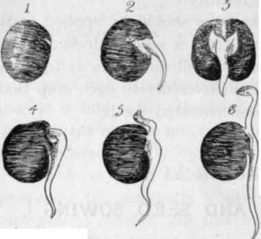
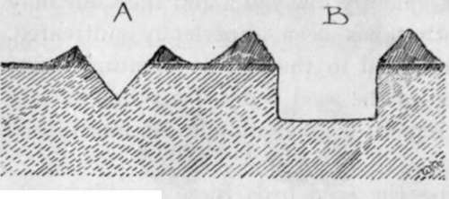
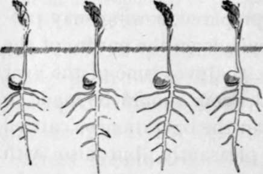
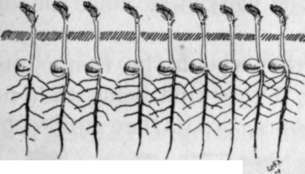
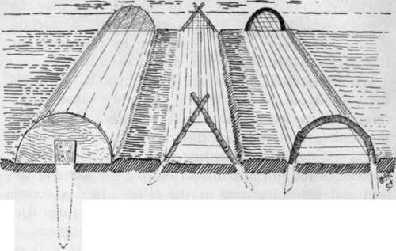

Chapter VI. Germination And Seed Sowing
Description
This section is from the book "School Gardening", by W. Francis Rankine. Also available from Amazon: School Gardening.
Chapter VI. Germination And Seed Sowing
Germination is the first stage in the development of the plant from the seed ; this development is only possible under certain fixed conditions, viz., air, warmth, and moisture. It should be observed that light is not essential, although in the growth of the matured plant it is necessary for healthy development.
The seed is a tiny food store protected by a seed coat; it contains the growth shoot or germ which is ready to develop when the food store is acted upon, by the influence of air, warmth, and moisture. If these conditions are absent the seed remains dry and hard ; it becomes soft and moist when germination takes place. Place some pea seeds in moistened flannel, store them in a warm place and the following changes will be observed :-
First, the seeds swell, and this is caused by absorption of moisture ; second, after several days the seed coat splits and the tiny root shoot, or radicle, makes its appearance and gradually develops ; and, third, soon the stem shoot, or plumule, is seen and rears its curved point upwards. However, there is a limit to this development, and after a week or so the young pea plant dies. Why ? Simply because it is starved; the store of the seed is exhausted; the plant has arrived at the stage when outside help is required, and there is no food in the flannel for its support.
These stages of germination proceed in a similar way in the ground except that there is a rich store of food available for the young plant when its roots and leaves are sufficiently developed. Therefore it is essential to prepare suitable seed-beds so that the germinating process may progress unhindered. The presence of air in the soil is secured by thorough working; in this way small passages are formed and air can enter freely. Warmth depends partly on the weather, on the nature of the soil, and the extent of its cultivation. A heavy soil that holds an excess of moisture is a cold soil, and germination is consequently delayed ; and the same may be said of a soil that has been imperfectly cultivated. Moisture is only retained in the soil by creating a fine tilth on the surface of the seed bed ; if a rough surface soil is allowed to remain a great amount of moisture is lost by evaporation.
Fig. 13. Germination Of Pea.
1. Appearance after immersion in water -the skin of the seed is bursting. 2. Radicle developing. 3. Full view ol 2. 4. Appearance of plumule. 5. The plumule freed from the cotyledons. 6. The radicle and plumule well developed. After this stage the seed disappears and the support of the plant comes from the air (as assimilated by the leaves) and from the soil (as secured by the roots).
Thus in preparing the seed beds these considerations must be carefully borne in mind and the work thoroughly carried out. The ground should have been well dug in autumn and thus exposed to frost action. In spring it should be forked deeply and the surface will crumble down into a fine soil; finally, the surface should be trodden down and evenly raked. These operations are of the greatest importance, for they secure the essential conditions of germination. The surface is fine and loose- thus air can enter freely and moisture is retained ; excess of moisture has escaped-thus the soil is warm ; a fine, but firm base has been formed-and in this way the even germination of the seed and the vigorous growth of the seedling are assured.
The seed bed having been prepared, sowing may proceed in due season, and this depends on the nature of the crop that is to be sown. At whatever time of the year the sowing takes place, an endeavour should be made to secure a fine day. Not only can the operation be carried out more cleanly and more pleasantly, but also with more profit, for a wet soil retards germination. At the same time, it should be borne in mind that moisture is essential, and in dry weather water must be applied as necessary.
Fig. 14. Forms Of Drills.
A.-Triangular drill as formed for the small seeds. It is made with a hoe, and the soil is arranged evenly on both sides as shown. Its depth varies with the nature of the seed to be sown. B.-A flat-bottomed drill as made for Peas and Beans.
Seeds are usually sown in drills at depths varying with the size of the seed. For this purpose,the line should be fixed firmly across the garden ; the drill is then made by means of the draw-hoe,which is held so that a corner of the blade displaces the soil. Great care must be taken to secure a straight drill of even depth ; otherwise the plants will grow irregularly. In sowing very small seeds, which require shallow drills, a thin stick may be employed for drilling : e.g., Mustard and Cress may be treated thus in ¼-inch drills.
The seed should be sown evenly and thinly ; here, mention must be made of the importance of thin sowing. There is always a tendency, even among gardeners, to sow thickly. This results in sheer wastage, not only of seeds, but also of plants and labour. Plants require breathing and feeding space, and the greater the number of plants crowded into a given space, the less air and food will each obtain. It is better to grow a small number of healthy, well-developed plants than to crowd the ground with weaklings. The mistake of thick sowing may be corrected to a certain extent by thinning, but this is rarely carried out to a proper extent.
Fig. 15. the result of thin sowing.
When the seeds are evenly distributed in the drills the soil should be lightly and smoothly raked over ; care must be taken not to rake to such a depth that the seeds are moved, or otherwise an irregular row of plants will result. A planting stick must be placed at one end of the row and a label bearing the name of the seed and date of sowing at the other. In due course the seedlings appear, but before this, in many cases it is necessary to protect the rows from the attentions of birds, slugs, snails, and mice. The birds attack Peas, Cabbage seedlings, and Radishes chiefly, and these should be secured from their ravages by means of wire guards or cotton. Peas should never be left without some form of protection. Slugs and snails are prevented from devouring the succulent leaves of Lettuce or Peas by surrounding the crop with lime or soot. Mice often prove a great source of annoyance and nibble pea seeds below the surface ; they are also fond of Sweet Pea growths. Where these small vermin are present the seeds should be damped and shaken up in red-lead before sowing, and traps must be placed where it is known that they visit the growing shoots of Peas. Often birds are blamed for the havoc worked by mice among the Peas.
As the seedlings develop they should be thinned to the necessary distance apart, a safe rule being that no plant shall touch its neighbours, or, if they are to be transplanted, they should be carefully lifted and placed in their new stations. In doing this, earth must be kept on the roots, or else the rootlets will be broken.
Fig. 16. The Result Of Thick Sowing.
Fig. 17. Forms Of Protection For Seeds.
Crops for Transplanting :- | |||||
Borecole Broccoli Brussels Sprouts | Cabbage Cauliflower Leeks | Savoys Vegetable Marrows Lettuces | |||
Crops that are Generally Sown where they will Mature :- | |||||
Beans | Parsnips Peas | Turnips Parsley Mustard | Cress Radishes | ||
n.B.-It is possible to transplant Beans, Peas, Beet and Onions. | |||||
Continue to: